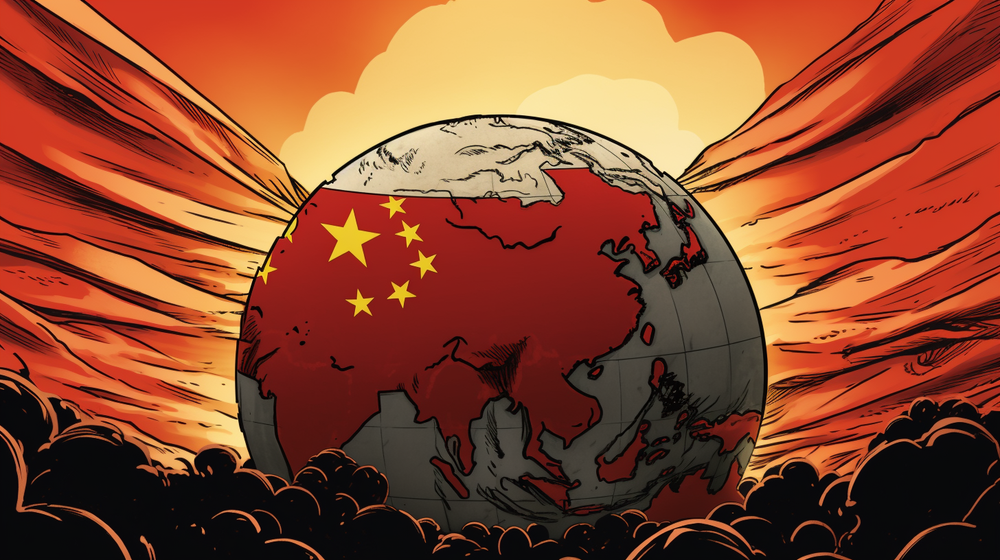

The 21st century, spanning from January 1, 2001, to December 31, 2100, is the current century in the Gregorian calendar and is characterized by significant transformations across various domains, including technology, politics, society, and the environment. This century follows the 20th century and is marked by rapid advancements in digital technology, globalization, and shifts in geopolitical power dynamics. The rise of the internet and digital communication has fundamentally changed how people interact, access information, and conduct business, leading to what is often referred to as the Information Age. Moreover, the 21st century has seen the emergence of critical global challenges such as climate change, international terrorism, and economic inequality, which demand collaborative solutions on an unprecedented scale. The interconnectedness of nations through trade, communication, and culture has become increasingly pronounced, creating a world that is both more integrated and more complex.
One of the most defining features of the 21st century is the digital revolution, which has transformed virtually every aspect of human life. The proliferation of the internet, mobile technology, and social media platforms has changed how people communicate, learn, and engage with the world around them. For instance, the advent of smartphones has enabled instant access to information and communication, empowering individuals to connect globally at any time. Social media platforms like Facebook, Twitter, and Instagram have not only reshaped personal interactions but also influenced political movements and social activism, allowing marginalized voices to be heard and mobilized in ways that were previously unimaginable. This digital landscape has also fostered the rise of new economic models, such as the gig economy, which offers flexible work opportunities but also raises questions about job security and labor rights. The digital revolution is exemplified by the transformative impact of platforms like Amazon and Alibaba, which have redefined retail by leveraging e-commerce to reach consumers directly, bypassing traditional brick-and-mortar businesses. The integration of artificial intelligence (AI) and data analytics into various sectors has further accelerated this change, enabling businesses to personalize customer experiences and streamline operations. However, these advancements also bring challenges, including issues related to privacy, data security, and the digital divide—where disparities in access to technology create inequalities both within and between countries. The digital revolution represents not only a technological shift but also a profound societal change, as it continuously shapes how individuals and communities interact, express themselves, and navigate the complexities of modern life.
Why is it essential to learn 21st Century?
One of the most critical reasons to learn about the 21st century is to understand how unprecedented technological advancements are reshaping society, economies, and the way people live. The rapid development of the internet, mobile communication, artificial intelligence (AI), and biotechnology has significantly altered nearly every aspect of daily life. For instance, the rise of AI has revolutionized industries like healthcare, where AI-powered diagnostic tools improve the accuracy of disease detection, and the transportation sector, where self-driving cars are being developed to enhance safety and efficiency. The spread of smartphones and social media has connected people globally, enabling the exchange of ideas, cultures, and movements at an unprecedented rate. However, these advancements also present challenges, such as data privacy concerns, cybersecurity threats, and the erosion of traditional job markets due to automation. Understanding the scope and potential of these technological changes is essential for navigating the complexities of the modern world. With AI and automation continuing to evolve, learning about the 21st century can provide insights into the future of work, education, and social interactions. It also highlights the need for digital literacy to engage meaningfully in a rapidly changing technological landscape. For example, as blockchain technology grows beyond cryptocurrency to sectors like finance and healthcare, understanding its implications helps individuals adapt to new realities, ensuring they can thrive in the digital age rather than be left behind by the accelerating pace of innovation.
Another essential reason to learn about the 21st century is to grasp the nature of globalization and how it has transformed global interactions, economics, and politics. Globalization, driven by advancements in communication and transportation, has created a more interconnected world where trade, culture, information, and ideas cross borders more easily than ever before. Companies like Amazon and Alibaba, for example, have globalized commerce, allowing consumers to purchase goods from across the world with a few clicks. This interconnectedness has fostered unprecedented levels of economic growth and cultural exchange but has also led to economic inequality, political instability, and the outsourcing of jobs from higher-income countries to lower-income nations. Understanding the complexities of globalization is crucial for making sense of modern global conflicts, economic disparities, and cultural shifts. The financial crises of the early 21st century, such as the 2008 global economic downturn, highlighted how interconnected economies can suffer from the ripple effects of financial instability in one region. Moreover, globalization has influenced migration patterns, cultural homogenization, and the rise of populist movements reacting to perceived threats from immigration or the loss of national identity. Learning about these issues equips individuals to critically analyze both the benefits and drawbacks of globalization, helping to form informed opinions on international trade, cultural preservation, and global governance.
A third major reason to learn about the 21st century is to understand and address the global challenges that define this era, particularly climate change and health crises like the COVID-19 pandemic. Climate change is perhaps the most pressing issue of our time, with rising temperatures, melting ice caps, and extreme weather events threatening ecosystems and human societies. The 21st century has seen growing recognition of the need for collective global action, leading to international agreements like the Paris Accord, which aims to reduce carbon emissions and mitigate the effects of global warming. Learning about the scientific, political, and economic dimensions of climate change is essential for fostering sustainable development and promoting environmental stewardship. Similarly, the COVID-19 pandemic, which emerged in the early 21st century, exposed the vulnerabilities of global public health systems and the interconnected nature of health security. The pandemic not only caused widespread loss of life but also disrupted global supply chains, economies, and social structures. Understanding the societal responses to COVID-19 and other health crises, such as how countries adapted their healthcare systems and developed vaccines in record time, is critical for preparing for future pandemics and building more resilient health infrastructures. These global challenges demonstrate the importance of learning from the past and present to develop solutions that will ensure a safer, more sustainable future for all.
Main Events
The September 11 Attacks (2001)
One of the most significant events of the 21st century occurred on September 11, 2001, when a series of coordinated terrorist attacks were carried out by the extremist group al-Qaeda against the United States. Four commercial airliners were hijacked, with two planes crashing into the Twin Towers of the World Trade Center in New York City, one hitting the Pentagon, and the fourth, United Airlines Flight 93, crashing into a field in Pennsylvania after passengers attempted to regain control. This devastating event resulted in nearly 3,000 deaths and caused extensive destruction, leading to a profound shift in U.S. domestic and foreign policy. In the immediate aftermath, the United States launched the War on Terror, which included military operations in Afghanistan aimed at dismantling al-Qaeda and removing the Taliban regime that harbored them. The attacks prompted significant changes in global security protocols, including heightened airport security measures and increased surveillance, affecting everyday life in the U.S. and around the world. The 9/11 attacks not only reshaped U.S. foreign policy but also led to widespread fear and anxiety about terrorism, creating a complex legacy that continues to influence international relations and security measures today. More about 9/11
Cr.: National Geographic Kids
The Global Financial Crisis (2008)
The global financial crisis of 2008 marked another pivotal event in the 21st century, triggering the most severe economic downturn since the Great Depression of the 1930s. The crisis was precipitated by the collapse of the housing market in the United States, fueled by subprime mortgage lending practices and the proliferation of complex financial instruments like mortgage-backed securities. When housing prices began to fall, many homeowners defaulted on their loans, leading to significant losses for financial institutions and a loss of confidence in the banking system. Major financial firms, including Lehman Brothers, went bankrupt, and governments around the world were forced to intervene with bailouts and stimulus packages to stabilize their economies. The crisis resulted in widespread unemployment, foreclosures, and economic instability, impacting millions of lives. In response, many countries re-evaluated their regulatory frameworks to prevent future financial meltdowns, leading to reforms such as the Dodd-Frank Act in the United States. The long-term effects of the crisis include a persistent global economic recovery process, rising income inequality, and a renewed focus on the importance of economic regulation and oversight in maintaining financial stability. More about 2008 Financial Crisis
Cr.: StreetFIns
The Arab Spring (2010-2012)
The Arab Spring, a series of anti-government protests and uprisings that spread across the Arab world starting in late 2010, stands out as a significant socio-political movement in the 21st century. Sparked by the self-immolation of Mohamed Bouazizi, a Tunisian street vendor who faced police harassment, the protests quickly escalated, leading to the ousting of long-standing leaders in Tunisia and subsequently in countries like Egypt, Libya, and Yemen. The movement was fueled by widespread discontent with authoritarian regimes, economic hardship, and a lack of political freedom. Social media played a crucial role in organizing protests and disseminating information, enabling activists to share their experiences and garner international support. While the Arab Spring initially appeared to promise a new era of democracy and reform, the outcomes varied significantly across different countries. In Tunisia, a relatively successful democratic transition occurred, while in Egypt, a military coup eventually overthrew the democratically elected government. In Libya, the civil conflict that ensued led to ongoing instability and violence. The Arab Spring highlighted the complexities of social change in the 21st century, illustrating both the power of grassroots movements and the challenges of achieving lasting political reform in the face of entrenched power structures. More about Arab Spring
Cr.: Democratic Erosion Consortium
The Rise of China as a Global Power
The 21st century has witnessed the remarkable rise of China as a global power, reshaping the geopolitical landscape and influencing economic dynamics worldwide. As China's economy transitioned from a centrally planned system to a market-oriented one, it experienced unprecedented growth rates, lifting millions of people out of poverty and establishing itself as the second-largest economy after the United States. This economic ascent has been accompanied by a significant expansion of China's global influence, marked by initiatives such as the Belt and Road Initiative (BRI), which seeks to enhance trade and infrastructure connectivity across Asia, Europe, and Africa. China's growing military capabilities and assertive foreign policy, particularly in the South China Sea, have raised concerns among neighboring countries and the international community. The U.S.-China rivalry has intensified, leading to tensions over trade policies, technology competition, and human rights issues. The implications of China's rise extend beyond economics and politics, affecting global culture, technology, and environmental policies as well. Understanding China's role in the 21st century is essential for analyzing current international relations and anticipating future developments on the global stage. More about Chinese Rise

Cr.: SOFREP
The Covid 19 Pandemic (2020)
The COVID-19 pandemic, which emerged in late 2019 and escalated throughout 2020, represents one of the most significant public health crises of the 21st century, with profound implications for society, economies, and global governance. The virus, caused by the novel coronavirus SARS-CoV-2, rapidly spread across the globe, leading to widespread illness, loss of life, and unprecedented public health measures. Governments implemented lockdowns, travel restrictions, and social distancing protocols to curb the spread of the virus, fundamentally altering daily life for billions of people. The pandemic also exposed vulnerabilities in healthcare systems, particularly in terms of preparedness and access to medical resources. Economically, the pandemic triggered a global recession, leading to job losses, business closures, and increased poverty rates. However, the crisis also accelerated advancements in technology, particularly in telehealth, remote work, and e-commerce, as individuals and organizations adapted to the new reality. The development and distribution of vaccines in record time showcased the power of scientific collaboration and innovation, offering hope for recovery. As countries continue to navigate the long-term effects of the pandemic, including mental health challenges and vaccine hesitancy, the COVID-19 crisis serves as a reminder of the interconnectedness of global health and the need for collective action in addressing future public health threats. More about Covid 19
Cr.: ENI CBC Med
Society
The Impact of Technology and Social Media
The omnipresence of technology, particularly social media, has fundamentally altered the fabric of society in the 21st century. Platforms like Facebook, Twitter, Instagram, and TikTok have transformed not only how people communicate but also how they perceive the world around them. The instantaneous nature of these platforms allows for real-time sharing of information and experiences, giving rise to new forms of social engagement and activism. Movements such as #MeToo and Black Lives Matter have gained momentum through social media, mobilizing individuals around shared causes and fostering a sense of community across borders. However, this digital environment is not without its pitfalls. The spread of misinformation and “fake news” poses significant risks to democratic processes and informed citizenship. Moreover, social media can contribute to issues of mental health, with users often experiencing anxiety and depression linked to social comparison and online interactions. As societies continue to navigate these complexities, understanding the implications of technology and social media becomes essential for fostering healthy, informed communities.
Globalization and Cultural Exchange
The 21st century has seen accelerated globalization, which has transformed societies by facilitating the exchange of ideas, cultures, and economic resources across borders. This interconnectedness has led to increased cultural exchange, allowing individuals to experience diverse perspectives and lifestyles. For example, the popularity of international cuisine, music, and fashion reflects a blending of cultural influences that enriches societies and promotes multicultural understanding. However, globalization also raises questions about cultural identity and preservation, as dominant cultures can overshadow local traditions and languages. The rise of nationalism and protectionist sentiments in some regions can be seen as a reaction to the perceived threats posed by globalization, highlighting the need for societies to balance openness with the preservation of their unique cultural identities. This dynamic interplay between globalization and cultural identity is an ongoing challenge that shapes the societal landscape of the 21st century.
Social Inequality and Movements for Change
In the 21st century, social inequality remains a pressing issue, with disparities in wealth, opportunity, and access to resources continuing to shape societal dynamics. The gap between the rich and poor has widened in many parts of the world, exacerbated by economic policies that favor the wealthy and by systemic injustices related to race, gender, and class. Movements advocating for social justice, such as those focused on income inequality, gender rights, and racial equity, have gained momentum, mobilizing individuals to demand systemic change. For example, the Occupy Wall Street movement in the United States highlighted concerns about economic disparity and corporate influence in politics, while global initiatives like the Sustainable Development Goals (SDGs) emphasize the need for inclusive growth and social equity. As these movements continue to evolve, they challenge established norms and structures, advocating for policies that promote equality and justice. Understanding the complexities of social inequality and the various movements that seek to address it is crucial for fostering a more equitable and just society in the 21st century.
Environmental Awareness and Sustainability
The 21st century has also seen a growing awareness of environmental issues, driven by the urgent need to address climate change, biodiversity loss, and unsustainable resource consumption. Societal attitudes toward the environment have shifted significantly, with increased recognition of the interconnectedness of human and ecological systems. Grassroots movements, led by activists like Greta Thunberg and organizations such as Extinction Rebellion, have mobilized public opinion around climate action, demanding government accountability and corporate responsibility. The emphasis on sustainability has permeated various sectors, leading to innovations in renewable energy, sustainable agriculture, and waste reduction. However, these efforts also face challenges, including political resistance, economic interests, and social disparities that affect individuals’ ability to engage in sustainable practices. The push for environmental awareness in the 21st century reflects a broader societal shift toward recognizing the need for sustainable development, fostering a collective responsibility to safeguard the planet for future generations.
Changing Gender Roles and Family Structures
In the 21st century, evolving gender roles and family structures have transformed societal dynamics, challenging traditional norms and expectations. Greater awareness of gender equality has led to significant progress in advocating for women's rights, LGBTQ+ rights, and diverse family configurations. More women are entering the workforce and assuming leadership roles, while discussions around toxic masculinity and gender stereotypes have prompted a reevaluation of societal expectations for men and women alike. Additionally, the acceptance of various family structures, including single-parent families, same-sex couples, and blended families, reflects a broader understanding of what constitutes a family in modern society. The rise of parenting movements focused on shared responsibilities, work-life balance, and inclusive practices further highlights these changes. As societies continue to grapple with issues of gender and family, understanding these evolving dynamics is essential for fostering inclusive communities that respect and celebrate diversity.
Science & Philosophy
Science
The 21st century has witnessed remarkable advancements in biotechnology, fundamentally transforming the landscape of medicine, agriculture, and environmental science. One of the most significant breakthroughs has been in the field of genetic engineering, particularly with the development of CRISPR-Cas9 technology. This revolutionary tool allows scientists to edit genes with unprecedented precision, enabling the modification of DNA sequences in living organisms. For instance, researchers have been able to develop genetically modified crops that are resistant to pests and diseases, which not only increases agricultural yield but also reduces the need for chemical pesticides. Furthermore, CRISPR technology holds promise for treating genetic disorders in humans, offering potential cures for conditions such as sickle cell anemia and certain types of inherited blindness. The ethical implications of such technologies are profound, sparking debates about gene editing, designer babies, and the potential for unintended consequences. As biotechnology continues to advance, it challenges our understanding of life itself and necessitates careful consideration of the moral, legal, and social implications of these innovations.
Artificial Intelligence (AI) has emerged as one of the most transformative scientific developments of the 21st century, reshaping industries, economies, and everyday life. From self-driving cars to voice-activated virtual assistants like Siri and Alexa, AI technologies are becoming increasingly integrated into daily activities. Machine learning, a subset of AI, enables computers to learn from data and improve their performance over time without explicit programming. For example, AI algorithms are now utilized in various fields, including healthcare, where they assist in diagnosing diseases by analyzing medical images with remarkable accuracy. In finance, AI-driven algorithms can predict market trends and automate trading, revolutionizing how financial transactions are conducted. However, the rapid advancement of AI raises significant ethical questions regarding privacy, job displacement, and bias in algorithms. As society grapples with these challenges, the development and implementation of AI technologies will require ongoing dialogue about their societal impact and the establishment of ethical frameworks to guide their use.
The 21st century has heralded a new era of space exploration, characterized by both governmental initiatives and the emergence of private companies in the aerospace industry. Notably, NASA's Mars Rover missions have captured global attention, with the Curiosity Rover landing on Mars in 2012 and the Perseverance Rover following in 2021. These missions aim to explore the Martian landscape, analyze soil samples, and search for signs of past life, advancing our understanding of the universe and our place within it. In addition to governmental efforts, private companies such as SpaceX and Blue Origin have made significant strides in space travel and exploration. SpaceX's Falcon 9 rocket successfully transported astronauts to the International Space Station (ISS) in 2020, marking a significant milestone in commercial space travel. The potential for future missions to Mars and beyond has ignited public interest and ambition in space exploration, raising questions about humanity's future as a multi-planetary species. Furthermore, the increasing commercialization of space travel could lead to new economic opportunities and international cooperation, making space a new frontier for exploration and innovation in the 21st century.
As concerns about climate change have intensified, scientific research in climatology has become increasingly vital in the 21st century. The Intergovernmental Panel on Climate Change (IPCC) has been at the forefront of assessing the scientific knowledge of climate change, providing critical reports that outline the impacts of global warming and the urgency of reducing greenhouse gas emissions. Research indicates that human activities, particularly the burning of fossil fuels and deforestation, are primary contributors to climate change, resulting in rising global temperatures, melting ice caps, and extreme weather events. In response to these findings, scientists have been exploring innovative solutions to mitigate climate change, such as renewable energy technologies (solar, wind, and geothermal), carbon capture and storage, and sustainable agricultural practices. Additionally, climate science has emphasized the importance of resilience and adaptation strategies for communities vulnerable to climate impacts. As society confronts the realities of climate change, scientific research continues to play a crucial role in informing policy decisions, promoting environmental sustainability, and fostering a collective response to one of the most pressing challenges of our time.
The 21st century has seen unprecedented advancements in health sciences, particularly in response to global health challenges such as pandemics, emerging diseases, and healthcare accessibility. The rapid development and deployment of COVID-19 vaccines serve as a notable example of this progress. Within a year of the virus’s emergence, pharmaceutical companies, including Pfizer-BioNTech and Moderna, developed mRNA vaccines that were proven effective in preventing severe illness and transmission. This remarkable achievement was made possible through decades of research in immunology and vaccine technology, illustrating the power of scientific collaboration and innovation in addressing urgent health crises. Beyond vaccines, advancements in telemedicine have transformed healthcare delivery, allowing patients to access medical consultations remotely and enhancing healthcare access, especially in underserved areas. Additionally, the 21st century has seen a growing emphasis on mental health, with increased awareness and research into the importance of psychological well-being and its impact on overall health. As societies continue to navigate complex health challenges, ongoing investment in health sciences and public health infrastructure will be essential for fostering resilient communities and ensuring equitable access to healthcare for all.
Philosophy
In the 21st century, postmodernism continues to exert a significant influence on philosophical thought, challenging traditional notions of truth, meaning, and authority. Emerging as a reaction to the certainties of modernism, postmodern philosophy posits that reality is constructed through language and cultural contexts, emphasizing the subjective nature of knowledge. Philosophers like Jacques Derrida and Michel Foucault have profoundly impacted contemporary thought by deconstructing established narratives and highlighting the power dynamics inherent in discourse. For instance, Foucault's analysis of power relations in society has reshaped how we understand institutions, knowledge, and social norms. This philosophical lens has informed various fields, including critical theory, cultural studies, and gender studies, encouraging individuals to question established hierarchies and seek multiple perspectives on truth. In an era characterized by rapid globalization and cultural exchange, the postmodern critique invites reflection on identity, representation, and the complexities of social reality, prompting ongoing debates about the nature of knowledge and the ethical implications of representation in a diverse world.
The pressing challenges of climate change and environmental degradation have given rise to a new branch of philosophical inquiry known as environmental philosophy. This field examines the ethical relationships between humans and the natural world, questioning anthropocentric views that prioritize human interests over ecological concerns. Philosophers like Aldo Leopold and Arne Naess have contributed to the development of eco-centrism and deep ecology, advocating for a more harmonious relationship between humans and nature. Leopold's concept of the "land ethic" emphasizes the moral responsibility of humans to care for the environment as a community that includes all living beings, not just humans. In the 21st century, environmental philosophy has gained traction in discussions about sustainability, conservation, and climate justice, urging societies to adopt ethical frameworks that prioritize ecological health and intergenerational equity. As global awareness of environmental issues rises, philosophical engagement with ecological ethics fosters critical reflections on our responsibilities toward the planet and future generations, challenging individuals and institutions to rethink their values and practices in the face of environmental crises.
The rapid advancement of technology in the 21st century has spurred philosophical inquiries into its implications for society, ethics, and human existence. As artificial intelligence, biotechnology, and digital communication reshape our lives, philosophers are increasingly concerned with the ethical dilemmas posed by these innovations. Notable thinkers like Nick Bostrom and Sherry Turkle explore the consequences of AI on human agency, privacy, and social relationships. Bostrom's work on the potential risks of superintelligent AI raises important questions about control, safety, and the long-term implications of creating machines that may surpass human intelligence. Meanwhile, Turkle's research on the impact of technology on interpersonal relationships emphasizes the need for authentic human connections in an age of digital communication. This philosophical engagement encourages critical reflection on how technology affects our values, relationships, and sense of self, fostering discussions about the ethical responsibilities of designers, policymakers, and users in shaping a technology-driven future. As society navigates the complexities of technological advancements, philosophical inquiry remains essential for understanding and addressing the profound changes that define our contemporary existence.
In an increasingly interconnected world, the 21st century has seen a growing emphasis on global ethics and human rights as central philosophical concerns. As globalization facilitates the movement of people, ideas, and resources, philosophers are grappling with the ethical implications of global interconnectedness. The work of scholars such as Martha Nussbaum and Amartya Sen has been influential in advancing capabilities theory, which emphasizes the importance of ensuring individuals have the opportunities and resources necessary to lead fulfilling lives. This perspective has informed discussions on social justice, development, and human rights, highlighting the need for ethical frameworks that transcend national boundaries. Additionally, the rise of transnational movements advocating for social justice, environmental sustainability, and human rights reflects a growing awareness of our shared responsibilities as global citizens. Philosophical discourse surrounding global ethics encourages individuals and communities to critically engage with issues such as poverty, inequality, and migration, fostering a deeper understanding of our interconnectedness and the moral imperatives that arise from it.
The 21st century has witnessed a resurgence of interest in political philosophy, driven by global events that challenge existing political systems and ideologies. The rise of populism, nationalism, and authoritarianism in various parts of the world has prompted philosophers to revisit foundational questions about democracy, justice, and the role of the state. Thinkers like Hannah Arendt and Judith Butler have provided critical insights into the nature of power, resistance, and the politics of identity. Arendt's exploration of totalitarianism and the importance of active citizenship underscores the need for political engagement in safeguarding democratic values. Butler's work on gender and performativity challenges conventional understandings of identity, prompting discussions about inclusivity and representation in political discourse. As societies grapple with political polarization and the erosion of democratic norms, philosophical inquiry into political ethics and theory serves as a crucial tool for understanding and addressing contemporary challenges. This revival of political philosophy encourages active participation in democratic processes and advocates for a more inclusive and equitable society, reinforcing the importance of philosophical engagement in navigating the complexities of modern governance.
Facts about 21st Century
One of the lesser-known yet transformative trends of the 21st century is the rise of digital nomadism, a lifestyle that allows individuals to work remotely while traveling or living in various locations around the world. This phenomenon has been largely fueled by advancements in technology, particularly the internet and mobile devices, which have made it possible for professionals to conduct business from virtually anywhere. As companies increasingly embrace flexible work policies, individuals in fields such as tech, writing, marketing, and design are finding that they can maintain their careers while exploring different cultures and environments. The growth of co-working spaces, online platforms connecting freelancers with clients, and the digital nomad community has further facilitated this lifestyle. However, the implications of this trend extend beyond personal freedom; it has significant economic effects on local communities, often bringing an influx of spending into areas that may have been previously underserved. Furthermore, it raises questions about the sustainability of such a lifestyle, the cultural impact on destinations, and the long-term feasibility of remote work as a norm rather than an exception.
Another essential but often overlooked fact about the 21st century is the significant shift towards a gig economy, where temporary, flexible jobs are more common than traditional full-time employment. This economic transformation has been driven by various factors, including technological advancements and changing workforce preferences. Platforms like Uber, Airbnb, and Fiverr have created new opportunities for individuals to monetize their skills, time, and assets, allowing them to earn income without being tied to a conventional employer. While the gig economy offers flexibility and autonomy, it also presents challenges such as job insecurity, lack of benefits, and income instability for workers. The growth of gig work has spurred debates about labor rights and the need for updated regulations that protect gig workers, reflecting a significant shift in how societies conceptualize work and employment. As more people turn to gig work as their primary source of income, understanding the complexities and implications of this economic model becomes increasingly vital.
The 21st century has also seen the emergence of "surveillance capitalism," a term coined by Shoshana Zuboff to describe the commodification of personal data by large tech companies. As individuals increasingly engage with digital platforms, their online activities generate vast amounts of data that companies collect, analyze, and utilize for profit. This data not only informs targeted advertising but also influences broader societal trends, political campaigns, and consumer behavior. While the convenience of personalized services is appealing, the ethical implications of surveillance capitalism raise concerns about privacy, autonomy, and consent. Many individuals remain unaware of the extent to which their data is monitored and commodified, leading to discussions about data ownership and the need for regulations to protect personal information. The dialogue surrounding surveillance capitalism prompts crucial questions about the balance between innovation and individual rights, highlighting the importance of fostering an informed and engaged citizenry in the digital age.
As the 21st century unfolds, an often underappreciated aspect of societal change is the emergence of a global mental health crisis. The World Health Organization (WHO) has identified mental health as a pressing issue affecting individuals of all ages and backgrounds, exacerbated by factors such as economic instability, social isolation, and the pervasive influence of social media. The COVID-19 pandemic further highlighted these challenges, with many individuals experiencing heightened anxiety, depression, and stress due to lockdowns, health concerns, and economic uncertainty. Despite growing awareness, mental health issues often remain stigmatized, leading to underreporting and inadequate access to care. Efforts to address this crisis have led to increased advocacy for mental health awareness, integration of mental health services into primary healthcare, and calls for policies that prioritize mental well-being. As societies continue to grapple with the implications of mental health, it becomes essential to foster environments that support emotional well-being, reduce stigma, and ensure access to mental health resources for all individuals.
Finally, a lesser-known but significant development in the 21st century is the advancement of quantum computing, a revolutionary field that has the potential to transform technology and science as we know it. Unlike classical computers, which use bits to process information as 0s and 1s, quantum computers use qubits, allowing them to perform complex calculations at unprecedented speeds. This technology promises to solve problems that are currently intractable for classical computers, including those related to cryptography, drug discovery, and complex system modeling. Companies like Google, IBM, and startups such as Rigetti Computing are heavily investing in quantum research and development, racing to achieve quantum supremacy—the point at which a quantum computer can solve problems beyond the capabilities of the most powerful classical computers. The implications of quantum computing extend beyond mere computational power; they challenge our understanding of information, security, and the nature of reality itself. As this field continues to evolve, it is crucial for society to engage in discussions about its ethical implications, potential disruptions to existing industries, and the need for governance frameworks to manage the complexities of quantum technology.
Quiz
1. How did the Hubble Deep Field observation in 1995 change our understanding of the universe?
2. Describe one contribution of ancient Babylonians to early astronomy.
3. Explain the impact of the Islamic Golden Age on the development of astronomy during the medieval period.
4. How did the heliocentric model proposed by Copernicus revolutionize our understanding of the solar system?
5. What are some of the key research areas in contemporary astronomy, and why are they significant?